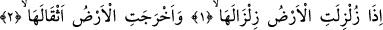
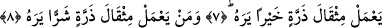
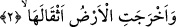

KİM ZERRE MİKTARI
HAYIR YAPMIŞSA
ONU GÖRÜR
Bismillâhirrahmânirrahîm
1. Yerküre kendine has sarsıntısıyla sallandığı,
2. Toprak ağırlıklarını dışarı çıkardığı
3. Ve insan «Ne oluyor buna!» dediği vakit,
4. İşte o gün (yer) bütün haberlerini anlatır.
5. Rabbinin ona bildirmesiyle
6. O gün insanlar amellerinin karşılığını görmeleri için kabirlerinden
darmadağınık çıkıp mahşer yerine gelirler.
7. Kim zerre miktarı hayır yapmışsa onu görür.
8. Kim de zerre miktarı şer işlemişse onu görür.
“Yer şiddetli bir” şekilde tekrarlanan “sarsıntı ile sallandığı” zaman. Burada,
“tekrarlanan” dememiz, sarsılma anlamına gelen “zilzâl” fiilinde, aynı harflerin tekrar
etmesinden dolayıdır. Çünkü lafızdaki harflerin tekrarı, sarsıntının tekrarını ifâde eder.
Yer, kendine mahsus bir sansıntı ile şiddetle sarsılacaktır. Ki bu sarsıntıyı Allah’ın
hikmet ve dilemesi böyle gerektirmektedir. Bu da sonsuz şiddetle bir sarsıntıdır.
2. Toprak ağırlıklarını dışarı çıkardığı
Yeryüzünün ağırlıklarını, sarsıntının ardından çıkaracak olmasına rağmen, öncelik ve
sonralık bildiren “fâ-i tâkibiye” değil de “vâv” getirilerek “ve ahreceti’l-arzu” denmesi
durumu, Kur’ân âyetlerini işiten kimsenin zihnine havale ederek onu düşünceye sevk
etmek içindir. “Yeryüzü” kelimesi önceki âyette geçtiği için, yerine zamir getirmek